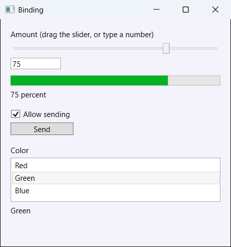

WPF data binding
In WPF controls can follow each other without any code. A text box shows the value of a slider, a button switches on and off with a check box, a label shows the chosen item of a list. This lesson writes all of it in XAML with bindings and tests it from Ring.
What you will learn#
- a binding: a property that follows another property,
ElementNameandPath,Mode=TwoWayandUpdateSourceTrigger=PropertyChanged,StringFormatandFallbackValue,- binding to
IsCheckedand toSelectedItem.Content, - testing a window by changing a value and reading another.
The tutorial WPF made one binding in code, and the tutorial WPF layout and styles wrote XAML. Here the bindings are in the XAML, so most of the work is done by WPF and the Ring code is short.
The program#
# WPF data binding - controls that follow each other: a slider, a text box, a progress bar, a check box and a list, all in XAML
load "dotnet.ring"
using {
"System.Windows"
"System.Windows.Controls"
"System"
}
oWindow = ""
func main
# A BINDING connects a property of one control to a property of another: when one changes, the other follows, and no Ring code runs.
# {Binding ElementName=amount, Path=Value} the property Value of the element named "amount"
# Mode=TwoWay the change goes both ways (a text box writes back to the slider)
# UpdateSourceTrigger=PropertyChanged write back at each key, not only when the text box loses the focus
# StringFormat=N0 the format string of the tutorial about formatting (the first {} is for the XAML parser)
# FallbackValue what to show when the path has no value
cXaml = '<Window xmlns="http://schemas.microsoft.com/winfx/2006/xaml/presentation" xmlns:x="http://schemas.microsoft.com/winfx/2006/xaml" Title="Binding" Width="380" Height="400" Background="#F4F2FB">'
cXaml += '<StackPanel Margin="16">'
cXaml += '<TextBlock Text="Amount (drag the slider, or type a number)"/>'
cXaml += '<Slider x:Name="amount" Minimum="0" Maximum="100" Value="20" Margin="0,6,0,6"/>'
cXaml += '<TextBox x:Name="box" Width="80" HorizontalAlignment="Left" Text="{Binding ElementName=amount, Path=Value, Mode=TwoWay, UpdateSourceTrigger=PropertyChanged, StringFormat=N0}"/>'
cXaml += '<ProgressBar x:Name="bar" Height="16" Margin="0,10,0,0" Maximum="100" Value="{Binding ElementName=amount, Path=Value}"/>'
cXaml += '<TextBlock x:Name="text" Margin="0,6,0,0" Text="{Binding ElementName=amount, Path=Value, StringFormat={}{0:F0} percent}"/>'
cXaml += '<CheckBox x:Name="allow" Content="Allow sending" IsChecked="True" Margin="0,16,0,6"/>'
cXaml += '<Button x:Name="send" Content="Send" Width="100" HorizontalAlignment="Left" IsEnabled="{Binding ElementName=allow, Path=IsChecked}"/>'
cXaml += '<TextBlock Text="Color" Margin="0,16,0,4"/>'
cXaml += '<ListBox x:Name="colors" Height="70"><ListBoxItem Content="Red"/><ListBoxItem Content="Green"/><ListBoxItem Content="Blue"/></ListBox>'
cXaml += '<TextBlock x:Name="chosen" Margin="0,6,0,0" Text="{Binding ElementName=colors, Path=SelectedItem.Content, FallbackValue=nothing chosen}"/>'
cXaml += '</StackPanel></Window>'
oWindow = wpfXaml(cXaml)
wpfRun(oWindow)
How it works#
A binding#
{Binding ElementName=amount, Path=Value} means: take the property Value of the element named amount. It is written as the value of a property in XAML. The element needs an x:Name, and the property that has the binding follows it from then on, at the start and at each change. The Ring program only creates the window; moving the slider changes the text box, the progress bar and the text without any Ring event.
Two directions#
A binding to a property such as ProgressBar.Value goes one way: the slider is the source and the bar the target. A text box is also an input, so its binding says Mode=TwoWay: typing 40 changes the slider. UpdateSourceTrigger=PropertyChanged sends the text at each change; without it WPF waits until the text box loses the focus.
Formats and fallbacks#
StringFormat=N0 formats the value as text with a format string (the tutorial Formatting numbers and dates), so the slider value 75 appears as 75 and not 75.0000000001. A format with braces starts with {} (StringFormat={}{0:F0} percent): the first pair tells the XAML parser that the text is not another binding. FallbackValue is shown when the path has no value; here, when nothing is chosen in the list.
State and choice#
IsEnabled="{Binding ElementName=allow, Path=IsChecked}" connects a button to a check box: unchecking switches the button off. Path=SelectedItem.Content follows the chosen item of a list and takes its text. These are the cases where a program without bindings needs an event for each control and a function that updates the others.
The test#
The test acts like the user: it sets the slider value, types into the text box, clears the check box and chooses an item, and after each step it reads the property that should have followed. The checks are the proof that the bindings are right.
The checks of this program are in a separate file, selftest/ch11_wpf_binding.ring:
# the checks of ch11_wpf_binding.ring: run with ring ch11_wpf_binding.ring --selftest (the program loads this file and runs selfTest() once its window is shown)
func selfTest
oSlider = wpfFind(oWindow,"amount")
oBox = wpfFind(oWindow,"box")
oBar = wpfFind(oWindow,"bar")
oText = wpfFind(oWindow,"text")
oSend = wpfFind(oWindow,"send")
oAllow = wpfFind(oWindow,"allow")
oColors = wpfFind(oWindow,"colors")
oChosen = wpfFind(oWindow,"chosen")
# the starting values follow the slider
dnAssert("the text box shows the slider",oBox.Text,"20")
dnAssert("the bar shows the slider",oBar.Value,20)
dnAssert("the text shows the slider",oText.Text,"20 percent")
# moving the slider (the program does what the user does) changes the three of them
oSlider.Value = 75
dnAssert("slider to text box",oBox.Text,"75")
dnAssert("slider to bar",oBar.Value,75)
dnAssert("slider to text",oText.Text,"75 percent")
# TwoWay: typing in the text box moves the slider
oBox.Text = "40"
dnAssert("text box to slider",oSlider.Value,40)
dnAssert("and so to the bar",oBar.Value,40)
# a check box switches the button on and off
dnAssert("the button is on",oSend.IsEnabled,True)
oAllow.IsChecked = False
dnAssert("the button is off",oSend.IsEnabled,False)
# a list: nothing chosen shows the fallback text, a choice shows the item
dnAssert("fallback",oChosen.Text,"nothing chosen")
oColors.SelectedIndex = 1
dnAssert("the chosen item",oChosen.Text,"Green")The controls here are bound to each other. A binding to the data of your program (a list of objects) needs .NET objects that tell WPF when they change (INotifyPropertyChanged), which cannot be written in Ring; a program of this kind puts the values into the controls with code, as the tutorial WPF does.
What you learned#
- the binding syntax with
ElementNameandPath, - one-way and two-way bindings,
StringFormatandFallbackValue,- bindings between a check box and a button, and between a list and a text,
- a test that reads the result of the bindings.
Exercises#
- Add a
Sliderfor the width of aRectangleand bindWidthto itsValue. - Bind the
Textof aTextBlockto theTextof the text box, so that it shows what is typed. - Make a second slider and bind its
Valueto the first one withMode=TwoWay. - Add a
ComboBoxinstead of the list and bind toSelectedItem.Content.